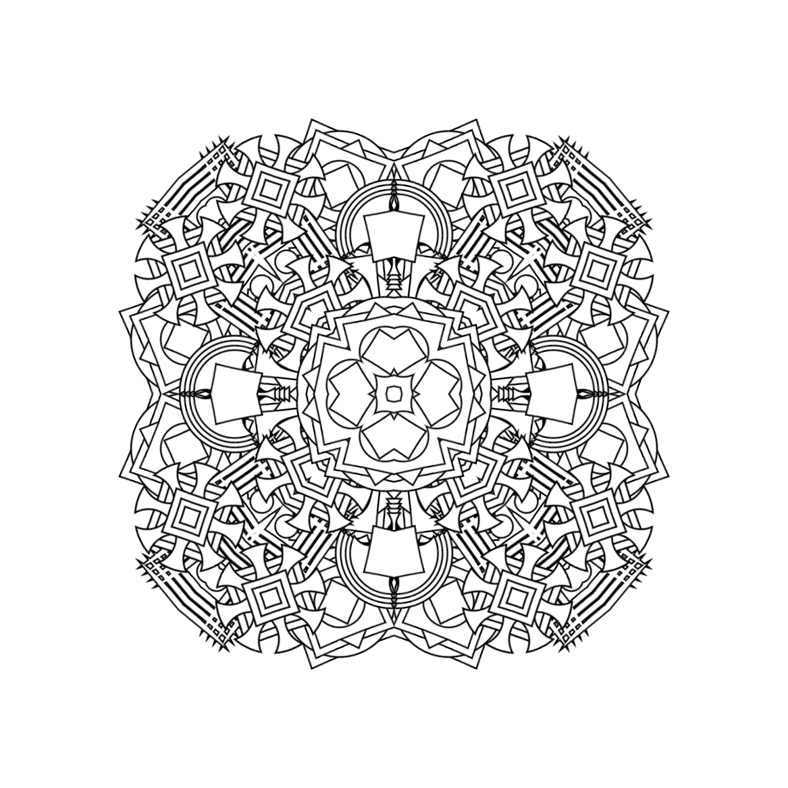
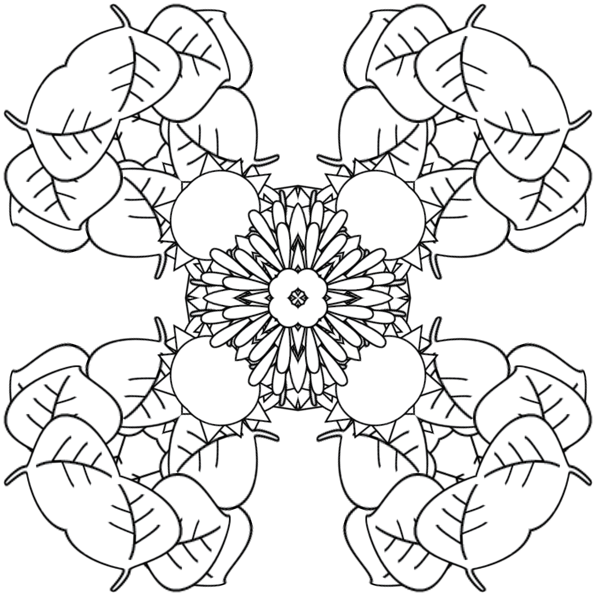
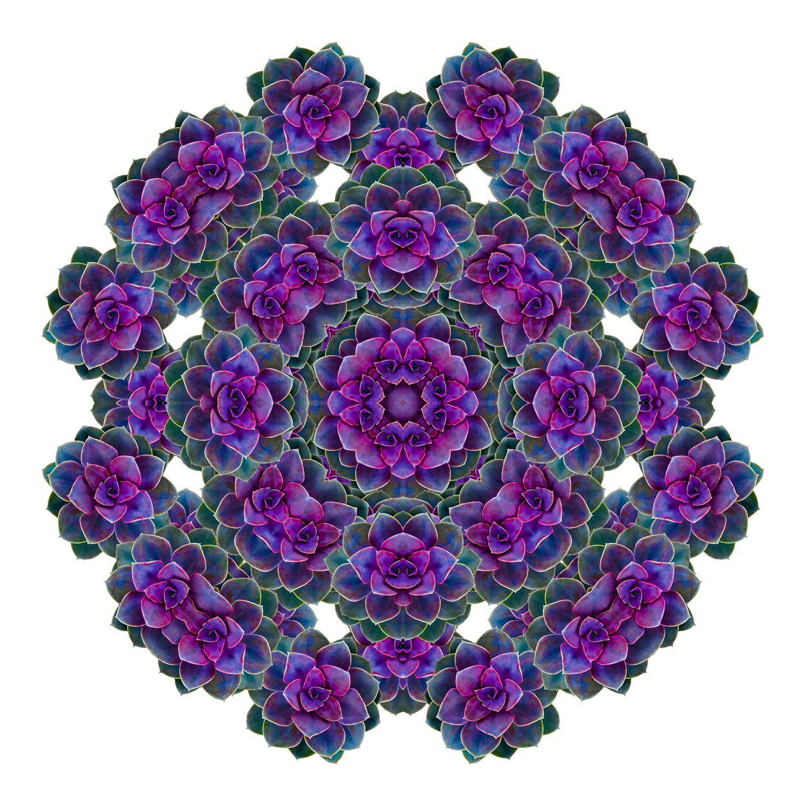
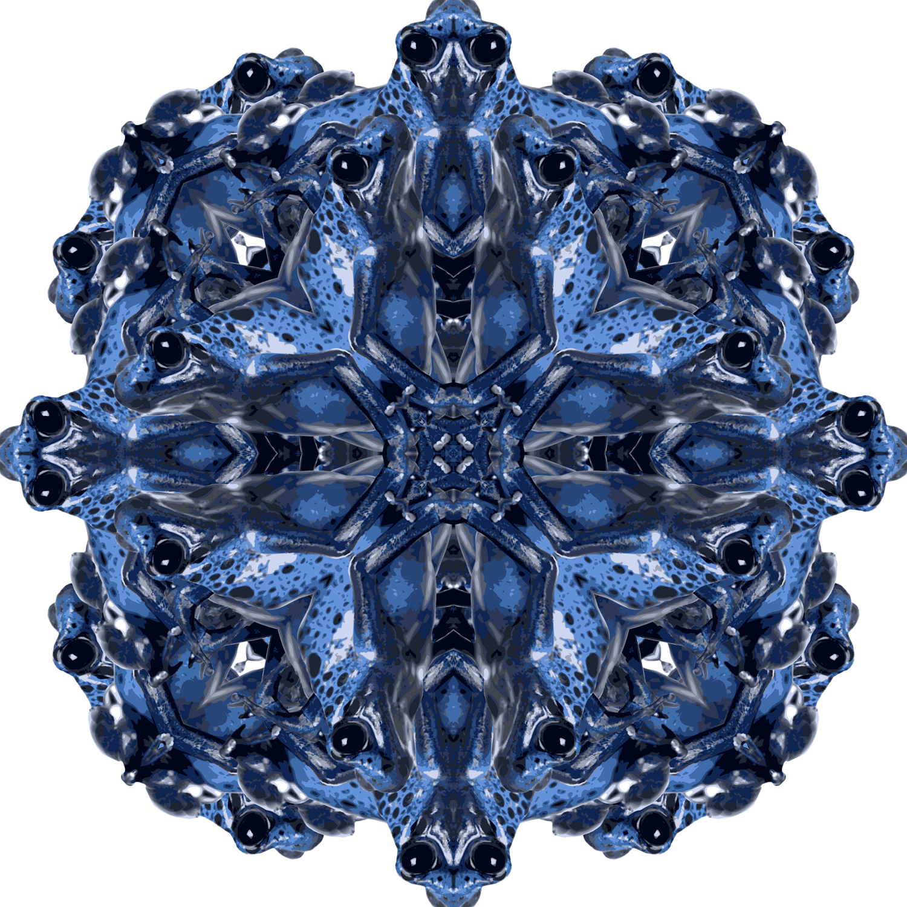

This project uses reflections and rotations to create kaleidoscope effects from different images. Below are examples of kaleidoscopes I have created and you can follow the links to make even more.
BLACK AND WHITE

This example creates a kaleidoscope effect from four random shapes I made using Adobe Illustrator. They all turned out fairly pointy for some reason.
SEASONS

This example repeats four shapes that represent the seasons.
SUCCULENT

This example creates a kaleidoscope effect from a picture of a succulent that looks like a flower.
FROG

This example repeats an image of a poison dart frog.
KOI FISH